|
Михаил Круг.
Те, соотечественники, кто никогда не был в Ярославле, лучше всего из его достопримечательностей знают памятник Ярославу Мудрому, изображенный на тысячерублевой купюре. Вряд ли нужно кого-то убеждать, что в этом древнем городе существует масса других достопримечательностей, причем гораздо более ценных и интересных. Тем не менее, раз уж речь зашла о памятнике выдающемуся князю Древней Руси, начнем нашу экскурсию от него, точнее говоря с Богоявленской площади, на которой он находится.
Памятник установили недавно, при Ельцине, который присутствовал при открытии монумента во время празднования одно из Дней города.
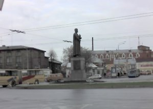
При строительстве памятника был обнаружен древний подземный ход, который, возможно, служил водопроводом или канализацией и шел со стороны кремля (Спасского монастыря). В просторечии монумент называется “Мужик с тортом”. Кстати, красное здание на фото справа от памятника - действующая кондитерская фабрика. Здесь утром действительно можно купить отменный, только что изготовленный торт.
Богоявленской площади ее исконное, досоветское название возвращено недавно, после начала Перестройки. Дело в том, что что рядом стоит церковь Богоявления. Как и большинство ярославских храмов-памятников архитектуры, она возведена в XVII веке. Облик церкви нетипичен для города и соответствует не местным, а московским образцам. Столичные мастера ее и возводили в память о заслугах Ярославля в борьбе с польскими интервентами.
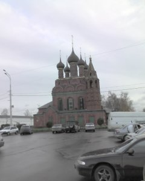
Во времена СССР площадь Богоявления носила имя революционера Подбельского, а попросту называлась Подбелкой. Это, пожалуй, географический центр Ярославля. Здесь находится почтамт и региональное представительство Центробанка, отсюда начинается дорога на Москву (Московский проспект), отсюда на городском транспорте можно без пересадок уехать почти в любой район города. Здесь назначают свидания, здесь больше всего таксистов-бомбил. Вокруг этой площади, пожалуй, самая высокая концентрация памятников архитектуры: Спасо-Преображенский монастырь, вышеупомянутая Богоявленская церковь, действующая церковь Дмитрия Солунского, церковь Михаила Архангела (гарнизонный храм).
От Богоявленской площади мы двинемся в сторону площади Волкова. Идти не далеко - два-три квартала. Тем не менее, по концентрации достопримечательностей этот отрезок пути не уступит Богоявленской площади. Здесь улицы Комсомольская и Первомайская обрамляют место, на котором в древности высился земляной вал.
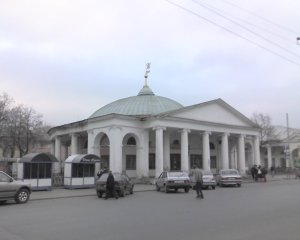
Пройдя добротное, облицованное гранитом здание отделения Центробанка, мы удидим замечательный образец русского провинциального классицизма - Ротонду, выполненную по проекту архитектора Панькова в первой половине XIX в. Далее следуют Торговые ряды в том же стиле. Подобные можно увидеть в Костроме и других старинных русских городах.
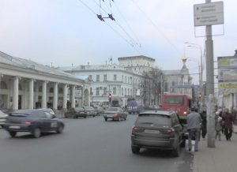
За Торговыми рядами видна Знаменская башня. Она была частью вышеупомянутых земляных укреплений. О них, впрочем, речь пойдет в отдельном материале (см. “Башни и стены Ярославля”). Здесь же замечу, что в “прилепленых” к башне зданиях, котороые видны на фото, находятся общежитие Ярославского университета и киностудия “Юность”.
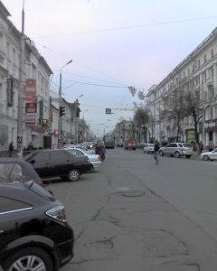
Путь от площади Богоявления до площади Волкова занимает минут 10, если не меньше. Прежде чем осматривать достопримечательности последней, давайте пройдем по коротенькому Торговому переулку и, бросим взгляд на одну из главных и давних магистралей города - улицу Свободы. Она изобилует интереснейшими архитектурными объектами, о которых в другой раз. Здесь стоит сказать разве что о здании бывшей гостиницы “Европа”, считавшейся лучшей в дореволюционном Ярославле (на фото - ближайшее, не вошедшее полностью в кадр здание по левой стороне улицы).
К концу XX в. оно настолько обветшало, что в один прекрасный день просто рухнуло, несмотря на статус памятника архитектуры. За реставрацию долго не брались. Много лет главная улица городского центра начиналась фрагментом растрескавшейся стены, подпертым со стороны двора стальными балками. Впечатление было такое, что здесь упала бомба. Лет пять назад частные инвесторы (кто-то из ярославских лакокрасочных магнатов) все же восстановили “Европу” в прежнем облике. Теперь здесь (кто бы мог подумать!) торговый центр.
По правой стороне в начале улицы Свободы - здание другой лучшей гостиницы города - “Ярославль”. Она являлась таковой в советское время.
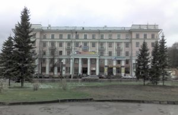
В наши дни в первенстве на звание лучшей гостиницы города с “Ярославлем” может потягаться “Юбилейная”. Здесь останавливаются во время гастролей артисты из числа звезд первой величины. Но иностранцев всегда (по крайней мере во времена СССР) селили именно в “Ярославль”. В годы моего детства здесь был единственный киоск “Союзпечати”, где можно было приобрести газеты на иностранных языказ (обязывали покупать для уроков). Здесь же школьники клянчили у иностранцев “жувачку”. Дело позорное, но из песни слова не выкинешь…
На фото представлено крыло гостиницы, которое выходит на площадь Волкова, к осмотру достопримечательностей которой мы сейчас и приступим.
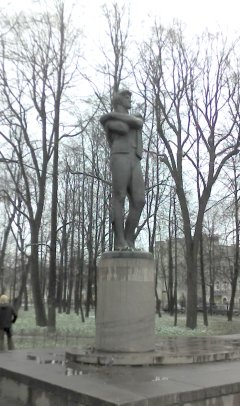
Справа от гостиницы расположен небольшой сквер, обнесенный несколько необычной плетеной стальной оградой и засаженый старинными липами. В нем находится памятник одному из самых выдающихся ярославцев - Ф.Г. Волкову. Знаменит он прежде всего тем, что во времена Екатерины II основал первый русский профессиональный театр. (Впрочем, я слышал, что первый русский театр появился в Твери). Волков был человеком разносторонним. Его руками выполнен резной иконостас церкви Николы Надеина, фото которого я в настоящее время не располагаю, но видел эту работу воочию. Это огромное, многоярусное сооружение из позолоченной липы (традиционный материал для церковного убранства), украшенное тонкой резьбой в форме виноградных листьев. Очень красиво.
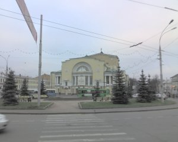
А вот и сам Государственный академический театр имени Ф.Г.Волкова. Это, конечно же, не то здание, где выступала первая российская труппа. Оно построено в начале XX в. на месте прежнего. На фото можно разглядеть транспарант на фронтоне. Сообщается о том, что в эти дни в театре проходит ежегодный, кажется, VIII-й, Волковский фестиваль (октябрь-ноябрь). Сама площадь имеет круглую форму, в центре - площадка со скамеечками и голубыми елями, именуемая некоторыми горожанами “плешкой”. Говорят, здесь традиционно собираются представители “сексуальных меньшинств”.
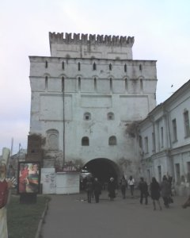
Полюбовавшись на достопримечательности площади Волкова, мы могли бы двинуться по роскошной липовой аллее Первомайского бульвара к Волжской набережной. Однако по берегу Волги мы пройдемся в рамках другой виртуальной экскурсии. Пока же вернемся к Знаменской башне и пройдем через ее древние ворота, где всегда, сколько себя помню, можно было купить живые цветы. Слева от башни - ничем не застроенный газон, где в пору моего детства стоял кинотеатр “Луч”.
“Пустующее” место в центре города - лакомый кусок для строительных корпораций. Этим летом (2007 г.) они совсем было “продавили” через мэрию проект застройки площади всевозможными торговыми центрами. Уже даже заграждения поставили и почти было копать начали. Но горожане ответили такой волной возмущения, что предпринимателям пришлось пойти на попятную.
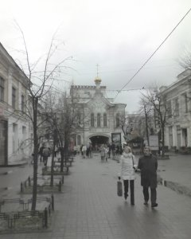
Выйдя из древних ворот и перейдя Первомайскую улицу, мы оказываемся на “ярославском Арбате” - пешеходной улице Кирова. Мода на зоны, где запрещен проезд транспорта, пошла с середины 80-х, когда такой эксперимент впервые был поставлен в Москве. С тех пор пешеходные улицы появились во многих городах: в Казани - улица Баумана, в Нижнем Новгороде - Покровская, в Ярославле - улица Кирова. Она вымощена брусчаткой и благоустроена во второй половине 90-х.
Здесь выступают уличные музыканты, торгуют сувенирами. Здесь на расстоянии всего лишь одного короткого квартала расположилось около десятка ювелирных магазинов. Оно и не мудрено: туристы, в том числе иностранные, первым делом направляются сюда, благо от гостиницы “Ярославль” до улицы Кирова - пять минут ходьбы.
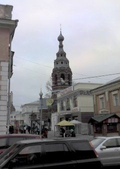
В переулке, соединяющей улицу Кирова с улицей Нахимсона, стоит действующая с недавних пор церковь. Она построена сравнительно поздно - в XIX в. и особой исторической ценности, кажется, не представляет (по крайней мере в популярных путеводителях не упомянута). Как называется - не знаю, но мне всегда нравилась ее ажурная колокольня из красного кирпича. Даже когда в здании церкви был цех швейной фабрики.

Раз уж случилось такое легкое отклонение от маршрута, приведу снимок, случайно сделанный на улице Нахимсона. На пропадать же добру. Это не настоящие вампиры и вурдалаки, а ребята из заезжего шоу каскадеров. Рекламируют свое представление. За зданием слева находится, кстати говоря, Центральный рынок - самый старый из тех, которые я в Ярославле знаю. В конце улицы видна Ротонда, о которой выше уже было сказано. Добавлю, что в ней всегда был (и до сих пор работает) магазин “Охота”. При входе там стоит огромное чучело медведя. По крайней мере в детстве казалось, что огромное.
Путь от Знаменской башни до конца мощеной части улицы Кирова занимает считанные минуты.
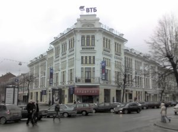
Здесь можно видеть замечательный образец архитектуры в стиле модерн - гостиницу “Бристоль”. Она упоминается, кстати говоря, Михаилом Кругом в песне “Ярославская”, фрагмент из которой приведен выше в качестве эпиграфа: “Я покажу тебе гостиницу “Бристоль”, Тверицкий бор и старый Волковский театр…”. Никакой гостиницы в этом здании давно уже нет. Знаменито же оно своим кафе, где в 80-е тусовалась неформальная молодежь. Сейчас кафе переместилось в подвал: видимо, недвижимость в центре не по карману даже владельцам престижных точек “общепита”. В былые же времена кафе занимало первый этаж. У его входа всегда можно было увидеть пестрые группки неформалов.
Я хоть и не относился ни к каким движениям вроде хиппи, панков и металистов, но в “Бристоле” бывал и с некоторой завистью слушал рассказы вроде: “…взял я тогда все свои деньги, все свои 15 копеек, да и махнул в Питер автостопом”. Или: “Пошел Сеня как-то мусор выносить, а тут пиплы ему встретились, в Крым отдыхать направляются дикарями. Он подумал, да и поехал с ними. Вернулся домой через месяц. Как был - в шлепанцах и с мусорным ведром”.
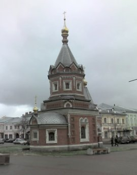
Наискосок от “Бристоля” - изящнейшее строение, часовня Александра Невского, построенная в XIX в. В советское время здесь размещался магазин “Пчеловодство” и мимо этого здания можно было пройти совершенно не заменив в нем никакой красоты, поскольку часовня была окружена ветхими постройками.
Если площадь Богоявленскую можно назвать “сердцем” Ярославля, то “голова” его находится здесь, в конце (а если считать по номерам домов - то в начале) улицы Кирова: огромное белое здание за часовней Александра Невского - Администрация Ярославской области. По соседству - мэрия города, но она размещена в гораздо более неприметном доме.
Здание построено в форме трапеции, имеет внутренний двор, поэтому поначалу его прозвали пентагоном. Впрочем, это название не укоренилось, а вот Белый дом - в ходу, поскольку стены администрации облицованы белым мрамором.
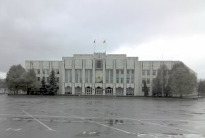
Фото здания Администрации я привожу не со стороны улицы Кирова, а с Советской площади. История местного Белого дома хоть и не отличается древностью, но изобилует интересными фактами.
Начать следует с того, что на месте, которое расчистили для строительства, была среди прочих старых построек стена, у которой в дни белогвардейского мятежа 1918 года расстреляли коммунистов. Так что место для Ярославского обкома КПСС - а именно эта организация построила для себя этот дворец - выбрано символичное. Памятник павшим за дело революции борцам находится неподалеку, в сквере на площади Челюскинцев.
Во-вторых, здание это должно было быть построено не в Ярославле, а в Краснодаре. Тамошний председатель крайкома выбил для этого лимиты, материалы и прочие ресурсы, да что-то замешкался. А наш Ф.И. Лощенков подсуетился и каким-то образом перенаправил всё это добро в Ярославль. И действительно, поскольку здание проектировалось в расчете на южный климат, зимой в нем бывает холодновато: окна большие, стены тонкие. Никто, конечно, не мерзнет, ибо отопление организовано с учетом изменившихся условий, и все-таки, проект явно южный.
С падением советской власти в начале 90-х здание перешло в руки демократов. Помню, как в конце 80-х на многолюдных митингах одним из их бронебойных аргументов демократических сил в борьбе с прежним строем было именно то, что “буржуи” (коммунисты то есть) отстроили себе дворец и наслаждаются в нем жизнью. Сторонники Ельцина, впрочем, заселились в освободившееся после обкома помещение без особого стеснения. Как бы то ни было, все сколь-либо значимые явления политической и экономической жизни современной Ярославсой области берут начало здесь.
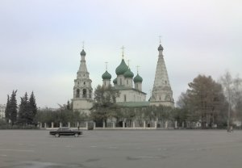
Напротив здания Администрации, в центре Советской площади стоит жемчужина ярославского зодчества XVII в. - храм Ильи Пророка. Этот собор - самый крупный из сохранившихся на сегодняшний день. Внутреннее убранство, являющееся уникальным произведением особой ярославской школы иконописи, находится в хорошем состоянии.
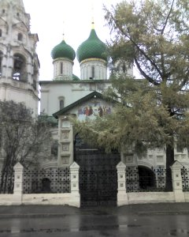
На фасаде до сих пор можно видеть исконные фрески, а вокруг здания - ограда с изразцами, которые, впрочем, в немалой степени являются восстановленными копиями. Несколько лет назад собор пытались перевести в разряд действующих, передать Русской Православной церкви, однако ученые-реставраторы утверждали, что внутреннее убранство храма пострадает, если начать проводить в нем регулярные службы. В результате был достигнут компромисс: службы в храме проводятся, но лишь по самым торжественным праздникам. В остальные же дни внутрь можно попасть в качестве туриста. впечатление от роскошного убранства усиливает пение церковного хора.
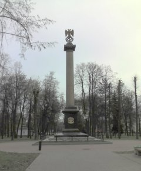
Заканчивая экскурсию, пройдем от собора Ильи Пророка в Демидовский сквер. Мы проследуем мимо уже упомянутого памятника жертвам белогвардейского мятежа и окажемся у другого монумента - Демидовского столба. Он восстановлен всего пару лет назад, а в дореволюционное время стоял на этом месте в честь Демидова - основателя Юридического лицея. Неподалеку стоял и сам лицей, сгоревший в 1918 году. В 30-е годы был взорван стоявший рядом самый большой храм тогдашнего Ярославля - Успенский собор.
Сейчас он восстанавливается в паре сотен метров от Демидовского столба к 1000-летию города. Это веяние времени: подобным образом восстановлены Храм Христа-Спасителя в Москве, мечеть Кул Шариф в Казани. Посетив Ярославль в ноябре 2007 года, я увидел, что цокольный этаж храма уже близок к завершению. Попутно ведутся раскопки, в ходе которых уже сделаны уникальные археологические открытия. Например, найдено групповое захоронение мирных жителей, погибших, очевидно, во время одного из набегов кочевников (а может и не кочевников, а рати какого-нибудь враждебного княжества).
На этом мы закончим знакомство с достопримечательностями центральной части Ярославля. Однако, конечно же, это лишь малая их толика. О некоторых других можно узнать из материалов “Башни и стены древнего Ярославля” и “Тайны Ярославских набережных”.
Написано в 2009 г.